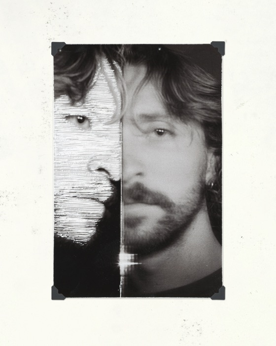
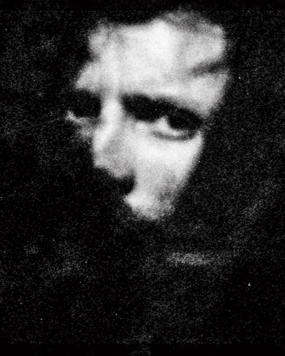
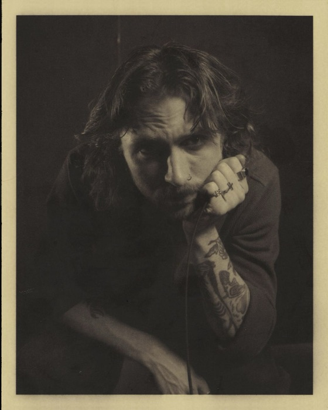
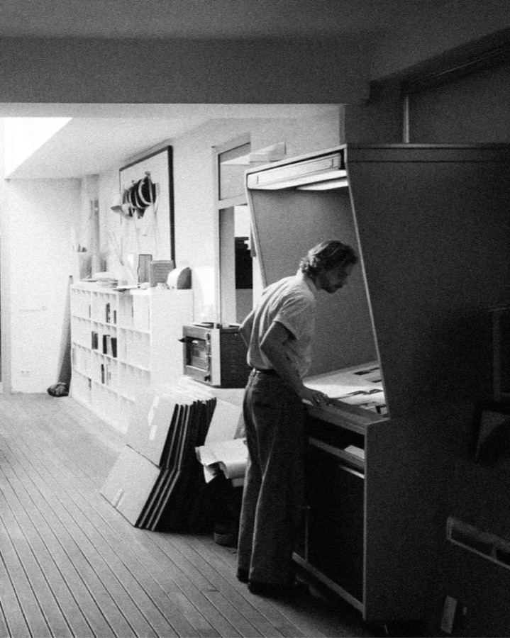

Is a designer and photographer who treats the printed page as the destination, not a step along the way. Client identities and personal photo studies get made with the same instinct — build it, take it apart, see if it still holds up on paper.
Publishing is the through-line: less a finishing step than the reason the work exists at all. A book, a zine, a spread — the object is the point.




Index
Project
Section